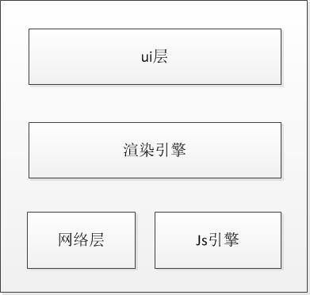

《javascript性能优化》读书笔记
简述
买这本书纯粹是奔着副标题去的，度量、监控、可视化，本来想看一看作者对于这几点给出的一些建议和解决方案，结果看到的却是没有太多普遍意义的各种举例子和具体代码，感觉有点失望。只好去芜存菁的来看这本书，下面列举一些值得学习和借鉴的点，权且当我没有白读这本书吧。
什么是性能？
性能主要分为：web性能和运行时性能
web性能
web性能指的是：当输入URL后，到页面呈现在用户面前时这一段时间
而这一性能指标主要包括网络时间消耗和浏览器解析与渲染带来的时间消耗，【网络时间】主要指浏览器加载资源带来的时间损耗，其中包括各种请求带来的事件损耗；【解析与渲染】，一般来说浏览器的基本架构如下图所示：

就以上浏览器架构来说，我们其实更应该探究一下渲染引擎和javasctipt引擎的秘密。下表给出了各主流浏览器使用的渲染引擎和javascript引擎的代号说明，以及详细的信息查询地址：
| 浏览器 | 渲染引擎 | javascript引擎 | 参考地址 |
|---|---|---|---|
| fireox | Gecko | spiderMonkey |
https://developer.mozilla.org/en-US/docs/Mozilla/Projects/SpiderMonkey https://developer.mozilla.org/en-US/docs/Mozilla/Gecko |
| safari | webkit | javascriptCore(nitro) |
http://www.webkit.org/ http://www.webkit.org/projects/javascript/index.html |
| IE | Trident | Chakra | http://msdn.microsoft.com/en-us/library/bb508515 |
| Opera | Presto | Caraken |
http://dev.opera.com/articles/view/presto-2-1-web-standards-supported-by/ http://my.opera.com/dragonfly/blog/index.dml/tag/Carakan |
运行时性能
什么是运行时性能？ 运行时性能是指应用程序运行时对用户输入的响应速度。运行时性能受到很多因素的影响，比如特定功能所采用的算法效率，到优化方案，解释器货浏览器渲染引擎的优化，cpu使用率，设计时同步，异步的操作等等，各个方面都会影响到运行时性能。
运行时性能的提升会带来网站的良好体验，好的体验用于提高用户的满意度。由运行时性能得出的一个【放弃率】公式如下： [放弃率] = （1 -（[成功访问数] / [访问总数]）） * 100
web性能优化
浏览器的网络渲染过程如下：【网络请求】-->【在dom中构建dom节点】-->【dom节点布局定位】-->【dom节点渲染绘制】 在这个流程中，尽量减少dom节点的重新排列和绘制将会极大的提高web页面的性能，毕竟dom的渲染和重绘是浏览器中最慢的操作之一。
惰性加载资源
惰性加载主要是一种按需加载的体现方式，主要思想是在运行时用到相关的资源才对该资源进行加载和初始化。他主要有几种不同的实现模式：
1、【虚拟代理模式】，此模式相当于先将变量声明，等待资源加载完成后对其进行初始化赋值
2、【惰性初始化模式】，此模式主要在运行时对变量进行检测，如果变量为空，则对其进行初始化赋值操作
3、【值持有模式】，此模式相当于单利模式，调用一个共有对象的函数来得到对象实例。
使用本地变量和属性
由于浏览器的栈转换导致的作用域链的层次过深导致的性能消耗，可以采取本地变量的形式对其进行长度缩减。
减少dom访问
dom访问是js执行中最缓慢的部分，将dom节点的修改集合到一起，然后统一附加给dom节点是一个不错的选择。
使用监控工具
性能需要监控，可能是webPagetest等等各种性能监控工具，这些工具可以使我们从繁重的性能监控工作中抽身出来，所以使用性能初始化工具是很有必要的。
焦土化性能？
为了性能牺牲其他一切，包括可读性，代码的组织，甚至等等一切，我觉得这里有点矫枉过正了，性能其实需要做一些平衡，不应该为了性能牺牲一切。
更多内容请查看zakwu的小站